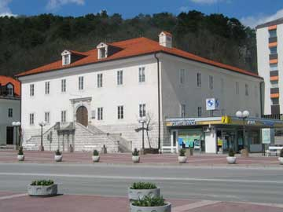

- Main page
- Topic and objectives
- Programme
- Technical information
- Organizing committee
- Location of venue
- Places to stay
- Places to eat
- General information
- Registration
- Archive of past schools
General information
Organizer
Karst Research Institute ZRC SAZU
Titov trg 2
SI-6230 Postojna
Slovenia
T: +386 5 700 1900
F: +386 5 700 1999
E: iks@zrc-sazu.si
Web: http://iks.zrc-sazu.si
Contact person:
Janez Mulec
E: iks@zrc-sazu.si
The school is supported by:
- Slovenian National Commission for UNESCO
- Scientific Research Centre of the Slovenian Academy of Sciences and Arts
- Municipality of Postojna
- Postojnska jama d.d.
